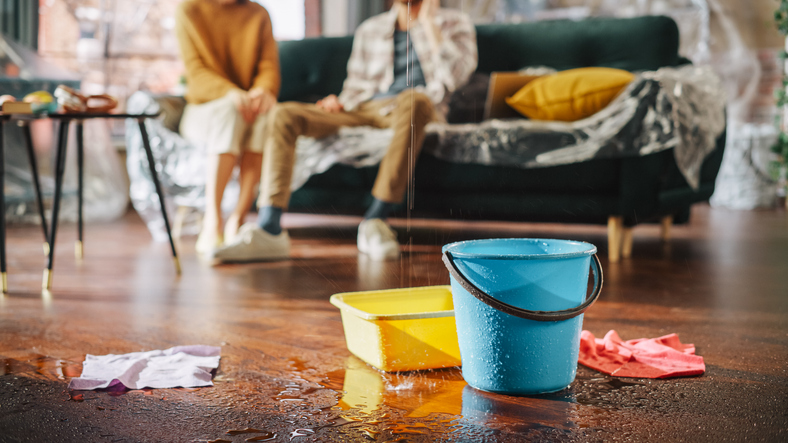

Water damage is one of the most stressful emergencies a homeowner can face. Whether it’s from a burst pipe, heavy rain, or an overflowing appliance, water moves fast—and the longer it sits, the more damage it causes. At SWAT Restoration, we’ve seen the difference that quick action makes, which is why we want to share what you should do immediately if water damage happens in your North Texas home.
Before anything else, make sure you and your family are safe. Turn off electricity to the affected areas if it’s safe to do so, and avoid entering rooms with standing water until you’re certain there are no electrical hazards.
If the damage is caused by a plumbing issue, shut off the main water valve right away. For storm-related flooding, use sandbags or temporary barriers to minimize incoming water until help arrives.
Time is critical. Mold can begin to grow within 24–48 hours, and water can quickly seep into floors, drywall, and foundations. That’s why calling a restoration company like SWAT Restoration immediately is the most important step you can take. Our team responds fast to begin the drying and restoration process before the damage spreads.
Take photos and videos of everything the water touched—floors, furniture, walls, and belongings. This documentation is vital for insurance claims. At SWAT Restoration, we also provide professional documentation to ensure your claim is as smooth as possible.
While you wait for help, use fans and dehumidifiers if possible. Remove rugs and move furniture to prevent further damage. But remember—surface drying isn’t enough. Professional equipment is required to eliminate moisture hidden in walls, ceilings, and flooring.
As a local, family-owned company, we understand the urgency and emotional stress that water damage causes. Our process includes:
Water damage can turn your life upside down, but you don’t have to face it alone. At SWAT Restoration, we’re your first responders for disasters, ready to step in, clean up, and restore your home to better than before.
If water damage strikes, don’t wait. Call SWAT Restoration right away for fast, reliable help.